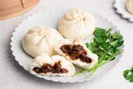

Char Siu Bao

Description
Char Siu Bao Buns are a Chinese dish. The steamed rice flour and wheat buns are filled with a sweet barbeque pork that's been marinated in the flavorful bright red sauce.
While all individual parts of the char siu bao are important, the key to a good char siu bao lies in the ratio of filling to bun. No one likes flat buns :(
Ingredients
- Char Siu Pork
- Flour
- Water
- Steamer basket
Steps
- Mix 1 cup of flour with 1.5 cups of water.
- Knead flower until a solid ball of dough is created.
- Let dough-ball rest in room temperature, dry, area.
- Slice char siu bao into small cubes.
- Cut dough-ball into smaller workable dough balls.
- Flatten out smaller dough-balls.
- Fill flattened dough-balls with pork.
- Close and twist dough around pork.
- Steam for 3-5 minutes.
- Enjoy!